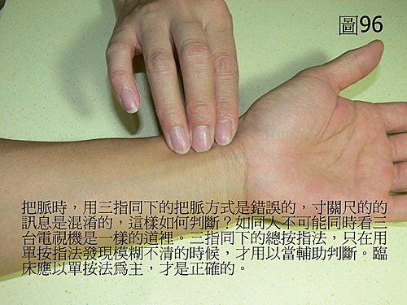
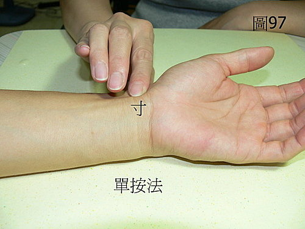
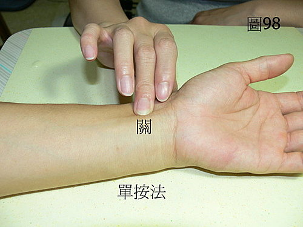
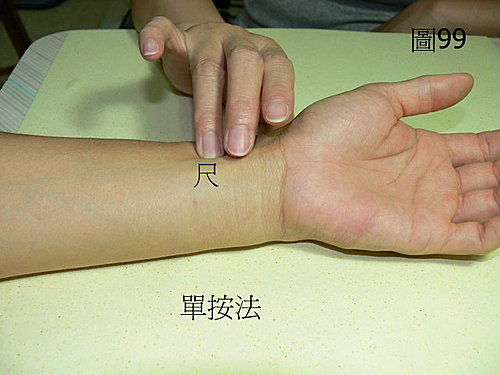

脈理醫理學 16：藥王脈學重要指法觀念‥‥‥脈診時三指同時下按是一大謬誤（一）。總按法開啟了庸陋之門。
作者：陳建元
自《內經》以來，左右手脈早已分出部位，各配置不同的臟腑。這樣的做法原因就是因為前賢發現使用這個方法可以去分別去察覺發病病機的位置在哪一個不同的臟腑，然後再依此為根據下藥，這個樣子就叫作〝有的放矢〞。不知道從何時起卻變成三指同下相沿成風氣，後代的醫家照著做，卻不思考其中合不合道理！試想：一次把三個脈位，又能同時仔細分辨清楚，可能嗎？這就像一次要同時看三台電視機，又要同時觀察得很清楚一樣是不可能的。肺、脾、腎陽三個脈位混雜成一團，根本分不清誰是誰，哪一個臟腑生病都分不出來了，又如何下藥？不過是自欺欺人，希望能偶中而已。
脈法中的「獨處為病」是一個重要的概念，某部脈之獨大獨小獨陷獨滑者，就是發病病機的關鍵處，既然如此，三指同下，在三部混淆不清的情況下是分不出來獨處的！ 澄清一個概念：脈診時三指同時下按是中醫脈診之一大謬誤，此謬誤不除，臨證水平無法提升！意思就是說雖然下指有總按與單按的不同；雖然總按有些特殊的意義容後再議，但臨床上90％以上必須以單按為主，才能清楚的查出病機和發病的部位。
〈圖96〉是「總按法」。〈圖97、98、99〉是「單按法」。




〈98.06.30補入〉總按法開啟了庸陋之門 ：
從醫案脈案8～15之中，我們可以輕易的發現：歷代的名醫，沒有人會去用總按法來判斷疾病，清一色都是用單按法來判斷疾病的轉機。古代資訊不發達，很多資訊拿不到，也未必大家都能看過《內、難、傷寒》諸經典，《內、難、傷寒》中正確的技術，礙於商業機密的考量，知道的名醫也密不示人，傳到後代，本來是正確的單按法，也錯亂走樣變成總按法（站在遠處看，兩個看起來都差不多），從此開啟了歷代庸陋之門。
自己先試一下自己或是別人的手，多試幾個，就會發現寸關尺三處的脈象，大抵上都不會一樣，有的寸浮而尺沉，有的寸寬大而尺細窄‥‥‥，是不會寸關尺三處都長同一個樣子的，千差萬別的脈象，反應了人體各個臟腑不同的差別情況，絕對不是總按法想的那樣，寸關尺的脈象，都是同一個樣子（或依附在西醫生理學，說脈管長長一條通通都一樣）。這是用單按法才會發現出來這種情況，現在再換回去用總按法試試看，會發現只有一種混合後的脈象，根本無法分出不同的差別。
這個傳承上的錯誤，導致中醫開口動手便錯，歷代醫案很多都只寫一個浮字，一個沉字，就是用了錯誤的脈法，寫了錯誤的記載，錯誤記載與事實不合，導致脈與證搭不起來，搭不起來只好引進玄理，胡說瞎湊一通來圓謊。玄理沒有系統，無法傳承，亂寫缺漏的脈象又不能反應真正的機轉，機轉反應不來則無法複製前賢的經驗，也無法複製效果，無法複製經驗，則每個學中醫的人都是單打獨鬥，重頭開始，無法複製效果則用了也不靈驗，只好像無頭蒼蠅一樣，到處找秘方，兩個原因加起來，一個指法的錯誤，開啟了歷代庸陋之門。
【引用請先來信告知徵求同意，若有涉及販售營利等商業行為，版權所有拷貝盜用必究。】
【藥王脈學講壇】http://blog.xuite.net/drjychen/twblog